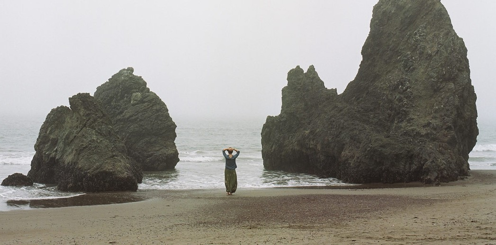

2009年的春天，上海海事大学一位30岁的女研究生杨元元，因为学校拒绝她的母亲住她宿舍，最终选择了跳楼自杀。表面上看这件事只会让人想到教育制度，想到现代人的心理承受力等问题，但回过头看整个故事，你会发现让你不寒而栗的其实是她母亲对她的“情感勒索”。 美国心理医师苏珊•福沃德(Susan Forward)是这样解释“情感勒索”的：它是一种强有力的操纵方式，和我们亲近的人用它直接或间接地威胁我们；如果我们不顺从他们，他们就会惩罚我们。不幸的是，在“孝道”的外衣下，“情感勒索”在中国处处可见。 杨元元的故事就是个典型的例子。她父亲早逝，从小与母亲、弟弟相依为命，母亲是一家军工厂的工人。在她短短的三十年人生中，母亲望春玲一直以母爱和孝道的名义操纵着杨元元。女儿想报考大连海事大学，望春玲以考武汉大学可以省些路费为由，阻止了女儿做出这一选择。从女儿大三起，因军工厂拆迁失去住处，她到大学投奔女儿，和女儿挤在一张床上居住，从此两人形影不离。女儿考上了小城市的公务员，因她希望女儿去北京、上海这样的一线城市而放弃。女儿30岁了，渴望爱情，亲属也劝她考虑女儿的终身大事，她却说，“我们楼上三十好几没结婚的多了”。女儿考上上海海事大学的研究生，虽然她每月有987元的退休金，但她理所当然地认为自己应该跟着去，和女儿同住宿舍。女儿两个月的研究生生涯里，从未参加任何一项集体活动，每次只是默默地跟在母亲背后，听她母亲说话。 没有朋友、没有梦想，没有自己的生活。杨元元唯一拥有的就是母亲，以及无穷的挫折、孤独、憋闷、自卑、屈辱和道德枷锁。这是一个完全看不到未来的故事，于是死亡也就顺其自然的发生了。 情感勒索者索要的是比通常物质上的敲诈勒索复杂得多的东西，可以是对方的关怀、付出等情感，也可以是金钱、时间和精力。打着爱的旗号，情感勒索者的目的是关系中的亲密，而本质上不过是一种权力关系。
因为我们害怕失去关系，害怕失去爱。尤其是亲子关系，孩子对父母对待他的方式没有选择。假如关系中缺少真爱，孩子对父母的爱的渴求就会变成希望父母满意。如果父母觉得勒索才能满意，那么就勒索吧。对被勒索者来说，亲密是对的，做自己反而是不对的。为了亲密，就可以牺牲掉自己。很多人在陷入被勒索的关系中时，是没有觉知的。 发生情感勒索的另一个深层原因是，对关系断裂的恐惧。双方常常有一个恶质的关系，但似乎被否定、被拒绝、被排斥，总比完全的彼此隔绝好。尤其是对勒索者来说，他内心中极度渴望爱，自己却不知道，于是往往会采用一些变态的手段，满足自身的情感需求。 《圣经》里，耶稣叫了十二个门徒来，吩咐他们说：“…… 你们不要想，我来是叫地上太平；我来并不是叫地上太平，乃是叫地上动刀兵。因为我来是叫‘人与父亲生疏，女儿与母亲生疏，媳妇与婆婆生疏。人的仇敌就是自己家里的人。’ 爱父母过于爱我的，不配作我的门徒；爱儿女过于爱我的，不配作我的门徒；不背着他的十字架跟从我的，也不配作我的门徒。得着生命的，将要失丧生命；为我失丧生命的，将要得着生命。”（《新约全书》马太福音10） 这段话里面有一句是中国人常常缺乏清醒认知的：“人的仇敌就是自己家里的人。”中国人在这方面有严重的认知障碍，始终被“情感勒索”笼罩着而不自知。如果充分认知到亲密关系里面的残酷性，因之保持一定的距离感，那就是觉悟之士了。 耶稣的这段箴言隐藏着一个极其深刻的哲理：唯有与亲情生疏，才可以获得自由发展的灵魂。不要被小范围的感情遮蔽了自己的广大智性。脱弃小众的自然伦理制约，获得人类普世价值的灵魂，以一种合乎理性的适度亲情来与亲人相处，才能远离“情感勒索”，获得独立、自由的生命。
